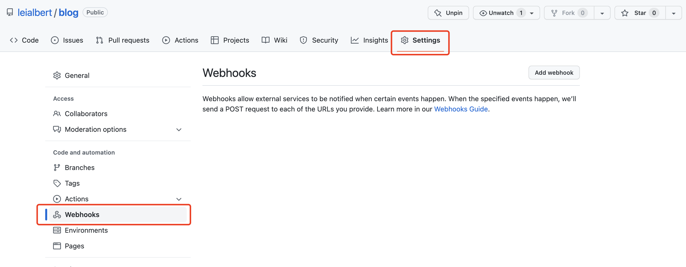
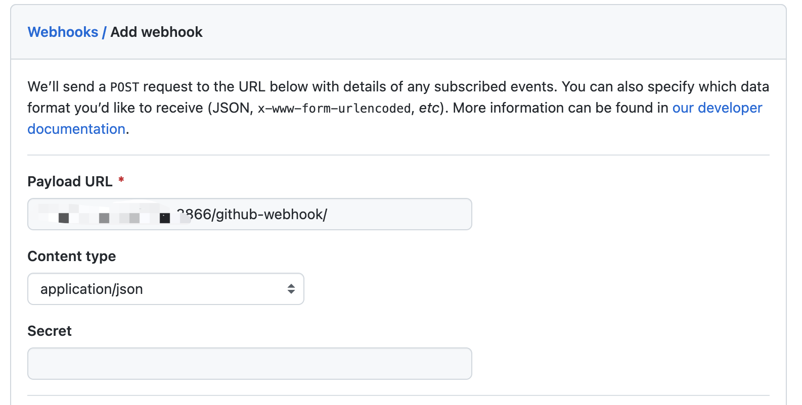
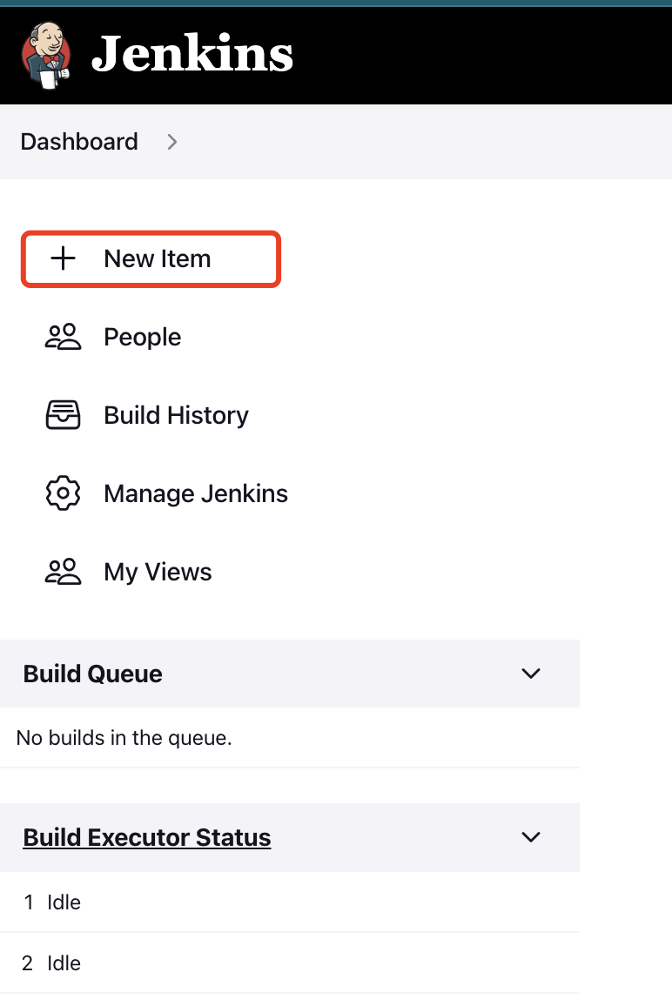
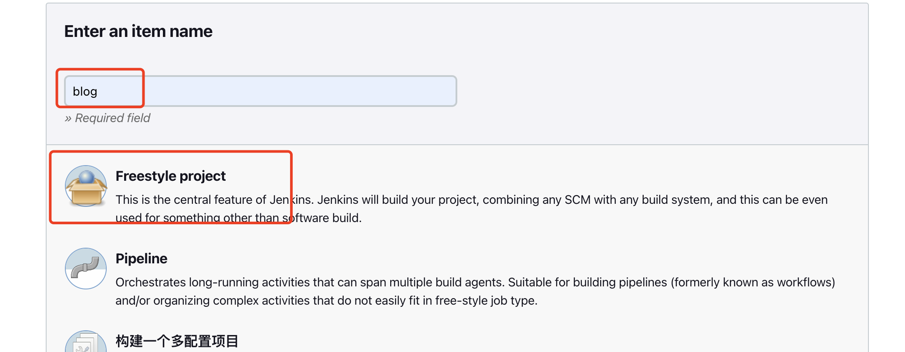

Deploy Your Blog with Jenkins
As you know, I built my blog with Hugo, and publish my static html file to github.
I used to use github pages as my server to run my blog before, but it’s really slowly when the visitors visting from China.
So I changed my mind, I bought a server located at HongKong.
It’s a Debian 11 server with nginx installed.
Step 1: Install Jenkins
There are a lot ways to install Jenkins, but I am using the following commands for my Debian OS.
curl -fsSL https://pkg.jenkins.io/debian-stable/jenkins.io.key | sudo tee \
/usr/share/keyrings/jenkins-keyring.asc > /dev/null
echo deb [signed-by=/usr/share/keyrings/jenkins-keyring.asc] \
https://pkg.jenkins.io/debian-stable binary/ | sudo tee \
/etc/apt/sources.list.d/jenkins.list > /dev/null
sudo apt-get update
sudo apt-get install jenkins
After the installation, you can change change Jenkins’s default port by the command as follows,
sudo systemctl edit jenkins
Then you should add the following contents to the file.
[Service]
Environment="JENKINS_PORT=8866"
After the port was modified, you can start your jenkins with the following commands.
sudo systemctl start jenkins # Start jenkins
sudo systemctl stop jenkins # Stop jenkins
sudo systemctl status jenkins # Check the status of jenkins
sudo systemctl restart jenkins # Restart jenkins
You can also change the jenkins’s home directory.
And one more thing, don’t forget to install the java.
Jenkins requires Java in order to run, yet certain distributions don’t include this by default and some Java versions are incompatible with Jenkins.
There are multiple Java implementations which you can use. OpenJDK is the most popular one at the moment, we will use it in this guide.
Update the Debian apt repositories, install OpenJDK 11, and check the installation with the commands:
$ sudo apt update
$ sudo apt install openjdk-11-jre
$ java -version
openjdk version "11.0.12" 2021-07-20
OpenJDK Runtime Environment (build 11.0.12+7-post-Debian-2)
OpenJDK 64-Bit Server VM (build 11.0.12+7-post-Debian-2, mixed mode, sharing)
Step 2: Go to Github repository and click on ‘Settings’

Step 3: Add webhook
In the ‘Payload URL’ field, paste your Jenkins environment URL. At the end of this URL add /github-webhook/. In the ‘Content type’ select: ‘application/json’ and leave the ‘Secret’ field empty.

Step 4: In the page ‘Which events would you like to trigger this webhook?’
choose ‘Let me select individual events.’ Then, check ‘Pull Requests’ and ‘Pushes’. At the end of this option, make sure that the ‘Active’ option is checked and click on ‘Add webhook’.
Step 5: Configure Jenkins


Step 6: Click on the ‘Source Code Management’ tab.
Click on Git and paste your GitHub repository URL in the ‘Repository URL’ field.